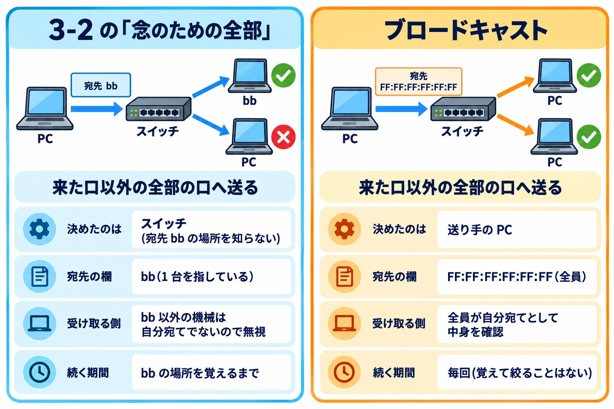
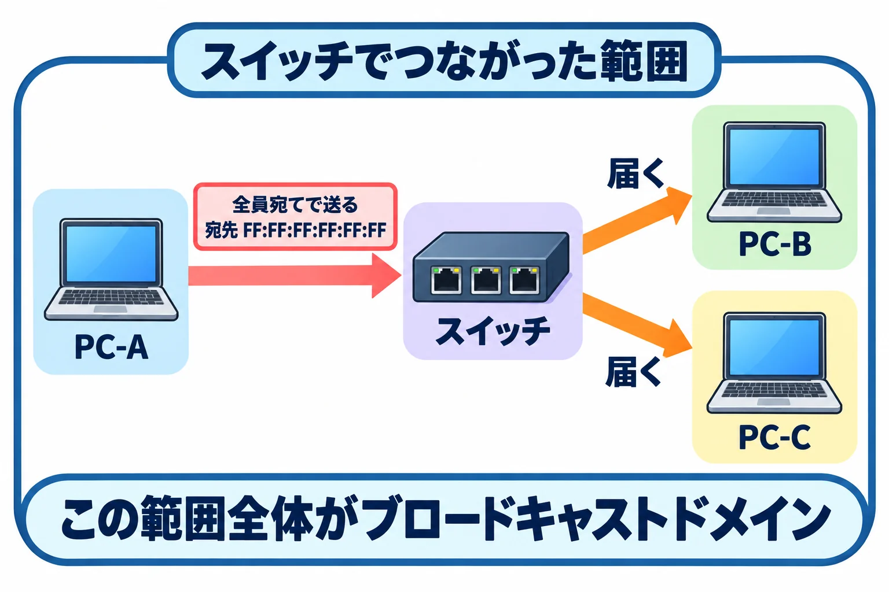

ネットワークのしくみ › 3-3
第 3 章 イーサネットと MAC アドレス 3-3
一斉に送った合図が、どこまで届くか
このページでわかること
宛先がまだ分からないときや、全員に知らせたいときのために、機械には特別な送り方がある。このページでは、その送り方がどこまで届くかを確認する。
このページの目次
かけあい
前のページの最後で、「念のための全部」にも範囲があるって言ってましたよね。その範囲ってどこまでなんですか?
まず、宛先を 1 台に絞らず、同じ範囲にいる機械全部に一斉に送る、特別な送り方があります。これをブロードキャストと呼びます。
なんでそんな送り方が必要なんですか?
相手の MAC アドレスが分からないと、フレームの宛先欄が書けません。そこで、まず全員に聞く送り方が要ります。MAC アドレスにも、宛先を全部の機械にする、全部が 1 になっている特別な番号(FF:FF:FF:FF:FF:FF と書きます)があります。
代表例は、3-1 の最後に名前だけ出したARPです。相手の IP アドレス(たとえば 192.168.1.1)は分かるのに MAC アドレスが分からないとき、「この IP アドレスの人、MAC アドレスを教えて」と全員宛てで送り、該当する 1 台だけが返事をします。詳しくは第 7 章 7-2で見ます。
ほかにもそういう場面はあるんですか?
新しくつないだ PC は、自分の IP アドレスも、それを配ってくれる機械の場所も知りません。そこで「誰か IP アドレスをください」と全員宛てで送り、配る役の機械だけが返事をします。この仕組みがDHCPで、詳しくは第 4 章 4-4で見ます。
前のページで見た、まだ表に載っていない相手に「念のため全部」に送るのと同じことですか?
スイッチがすることは、どちらも来た口以外の全部の口へ送るだけで同じです(3-2 の図の③の矢印と同じ動きです)。違うのは、誰がそう決めたか、受け取った側がどうするか、いつまで続くかの 3 点で、下の図で並べます。

3-2 の「念のための全部」 決めたのは: スイッチ(宛先 bb の場所を知らない) 宛先の欄: bb(1 台を指している) 受け取る側: bb 以外の機械は自分宛てでないので無視 続く期間: bb の場所を覚えるまで ブロードキャスト 決めたのは: 送り手の PC 宛先の欄: FF:FF:FF:FF:FF:FF(全員) 受け取る側: 全員が自分宛てとして中身を確認 続く期間: 毎回(覚えて絞ることはない)
同じ「全部の口へ送る」動きでも、決めた人・受け取る側・続く期間が違う。
じゃあブロードキャストって、スイッチとは別の機械があるんですか? それともスイッチの機能ですか?
どちらでもなく、機械ではありません。送る側の PC が、フレームの宛先欄に全員宛ての番号(FF:FF:FF:FF:FF:FF)を書く、という宛先の書き方です。スイッチはその宛先を見て、来た口以外の全部の口へ送るだけで、この番号を MAC アドレステーブルに覚えることもありません。
じゃあ、そのブロードキャストってどこまで届くんですか?
スイッチでつながっている範囲全体に届きます。この範囲のことをブロードキャストドメインと呼びます。

┌ スイッチでつながった範囲 │ PC-A が全員宛てで送る │ 宛先 FF:FF:FF:FF:FF:FF │ ├→ PC-B に届く │ └→ PC-C に届く └ この範囲全体がブロードキャストドメイン
全員宛てに送ると、スイッチでつながった範囲の機械全部に同時に届く。
じゃあブロードキャストドメインは、配線でつながっている範囲そのものってことですか?
近い考え方ですが、正確には「ブロードキャストが届く範囲」のことです。スイッチでつながっている範囲は、ふつうそのまま 1 つのブロードキャストドメインになります。
ブロードキャストを受け取った機械は、みんな同じように処理するんですか?
はい。宛先 MAC アドレスが自分と違う普通のフレームは、確認せずに無視できます。ブロードキャストだけは、宛先に関係なくドメインの中の機械全員が中身を確認する、特別な扱いです。
なるほど、だからブロードキャストが多いと、みんなの負担が増えるんですね。機械が増えるほど届く先も増えますし。
そのとおりです。
先輩から聞いた話なんですけど、新しく増設したフロアで機械が増えたら、ネットワーク全体が急に遅く感じるようになったらしいんです。なんでですか?
ブロードキャストは、同じブロードキャストドメインの中の機械全部に届き、受け取った機械はそれぞれ処理をします。台数が増えるほど、全員が受け取って処理する合図の数も増えるので、負担が増え、遅く感じることがあります。ブロードキャストドメインはむやみに広げない方がよい、ということです。
この範囲を、配線を変えずに区切ったりはできないんですか?
できます。次のページで見ましょう。
まとめ
- 宛先を 1 台に絞らず、同じ範囲にいる機械全部に一斉に送る送り方を、ブロードキャストと呼ぶ。宛先が分からない相手を探すときや、全員に知らせたいときに使われる。たとえば、IP アドレスから MAC アドレスを調べる ARP と、IP アドレスを配ってもらう DHCP が、この送り方で相手を探す。
- ブロードキャストが届く範囲にある機械全体のまとまりを、ブロードキャストドメインと呼ぶ。スイッチでつながっている範囲が、ふつうそのまま 1 つのブロードキャストドメインになる。
- ブロードキャストは機械ではなく、送り手がフレームの宛先欄に全員宛ての番号を書く送り方である。スイッチの動作は「念のための全部」でもブロードキャストでも同じ(来た口以外の全部の口へ送る)で、違うのは、誰が決めたか・受け取った側がどうするか・いつまで続くかである。
- 宛先が自分でない普通のフレームは確認せずに無視できるが、ブロードキャストは宛先に関係なく、範囲の中の機械全部が中身を確認する。
- ブロードキャストドメインの中の機械が増えるほど、ブロードキャストを受け取って処理する機械も増え、負担が増えて遅く感じることがある。
しくみの話
ブロードキャストは、宛先を 1 台に絞らず同じ範囲の機械全部に一斉に送る送り方で、MAC アドレスには宛先を全部の機械にする、全部が 1 になっている特別な番号が使われる(#4 p.115)。この、ブロードキャストが届く範囲にある機械全体のまとまりを、ブロードキャストドメインと呼ぶ。スイッチは、宛先 MAC アドレスがまだ分からないフレームを他の全部の差し込み口に転送するが、これは宛先が分かるまでの一時的な動きであり、最初から全員向けに送るブロードキャストとは異なる(#71 p.45〜46)。ブロードキャストは、宛先がまだ分からない相手を探す場面でも使われる。ARP は相手の MAC アドレスを調べる合図をブロードキャストで送り(#44)、DHCP のクライアントは、最初の DHCPDISCOVER をブロードキャストで送って、使える DHCP サーバを探す(#82 行 525、#73 p.49)。宛先 MAC アドレスが自分と異なる普通のフレームは確認せずに無視できるが、ブロードキャストは宛先に関わらず範囲の中の機械全部が中身を確認する、特別な扱いの送り方である。ブロードキャストドメインの中の機械が増えるほど、受け取って処理する機械の数も増えるため、台数の多いネットワークほどこの負担が大きくなりやすい。
参考文献
- [#4] 東京大学 江崎研究室（wide.ad.jp）「ネットワーク工学概論（教員公開版・現行）」 — 原典（08_Link.txt p.115 ブロードキャストアドレス、全部 1 の MAC アドレス）
- [#71] NAIST IPLab（インターネット工学研究室）「Internet Engineering (4007)」 — 原典（2018-02-datalink.txt p.45〜46 宛先不明の MAC アドレスへの転送）
- [#44] Cisco「TCP/IP Overview」 — 原典（"ARP uses broadcast messages to determine the hardware (MAC layer) address"）
- [#82] IETF「RFC 2131: Dynamic Host Configuration Protocol」 — 原典（行 525〜526、547 クライアントが DHCPDISCOVER をブロードキャストする記述）
- [#73] 京都大学 OCW「基礎情報処理 第 9 回「コンピュータネットワーク」」 — 原典（2004_kisojouhoushori_09.txt p.49「DHCP での IP アドレスのリース」の図、ブロードキャストで DHCPDISCOVER を送る）
クイズ
スイッチが宛先不明のフレームを念のため全部の差し込み口に送る動作と、ブロードキャストの違いとして正しいものはどれか。
ブロードキャストドメインの説明として正しいものはどれか。
ブロードキャストドメインの中の機械が増えると、何が起きやすくなるか。